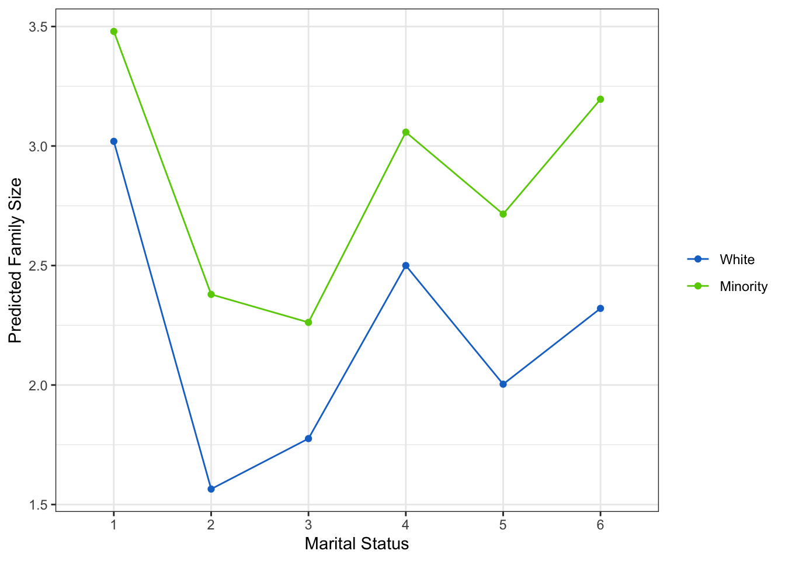

Chapter 4: Basic Analyses
“The goal is to turn data into information, and information into insight.” — Carly Fiorina
In this chapter we are going to demonstrate basic modeling in R. Lucky for us, R is built for these analyses. It is actually quite straight-forward to run these types of models and analyze the output. Not only that, but there are simple ways to compare models.
We will go through the ANOVA family of analyses, the linear regression models, and look at diagnostics of each.
ANOVA
ANOVA stands for analysis of variance. It is a family of methods (e.g. ANCOVA, MANOVA) that all share the fact that they compare a continuous dependent variable by a grouping factor variable (and may have multiple outcomes or other covariates).
\[ Y_i = \alpha_0 + \alpha_1 \text{Group}_i + e_i \] Since the groups are compared using “effect coding,” the \(\alpha_0\) is the grand mean and each of the group level means are compared to it.
To run an ANOVA model, you can simply use the aov function. In the example below, we are analyzing whether family size (although not fully continuous it is still useful for the example) differs by race.
df$race <- factor(df$ridreth1,
labels=c("MexicanAmerican", "OtherHispanic", "White", "Black", "Other"))
df$famsize <- as.numeric(df$dmdfmsiz)
fit <- aov(famsize ~ race, df)
anova(fit)## Analysis of Variance Table
##
## Response: famsize
## Df Sum Sq Mean Sq F value Pr(>F)
## race 4 541.2 135.300 51.367 < 2.2e-16 ***
## Residuals 4627 12187.5 2.634
## ---
## Signif. codes: 0 '***' 0.001 '**' 0.01 '*' 0.05 '.' 0.1 ' ' 1We make sure the variables are the right type, then we use the aov function. Inside of the function we have what is called a formula. It has the general structure: leftside ~ rightside. Generally, the left side is an outcome variable and the right side is the predictor (i.e. independent) variable. Here, we have race predicting famsize. We assign the model to the name fit which is a common way of denoting it is a model. Finally, we use the anova function to output a nice ANOVA table.
In the output we see the normal ANOVA table and we can see the p-value (Pr(>F)) is very, very small and thus is quite significant. We can look at how the groups relate using a box plot. We will be using some of the practice you got in Chapter 3 using ggplot2 for this.
library(ggplot2)
ggplot(df, aes(x=race, y=famsize)) +
geom_boxplot(aes(color=race)) +
scale_color_manual(guide=FALSE,
values=c("dodgerblue3", "coral2", "chartreuse4",
"darkorchid", "firebrick2")) +
theme_bw()## Warning: It is deprecated to specify `guide = FALSE` to remove a guide. Please
## use `guide = "none"` instead.
This immediately gives us an idea of where some differences may be occuring. It would appear that “White” and “MexicanAmerican” groups are different in family size.
Assumptions
We also would like to make sure the assumptions look like they are being met. In ANOVA, we want the residuals to be distributed normally, the variance of each group should be approximately the same, the groups are assumed to be randomly assigned, and the sample should be randomly selected as well.
In R we can get some simple graphical checks using plot. All we provide is our ANOVA object (here it is fit). The line before it par(mfrow=c(1,2)) tells R to have two plots per row (the 1 means one row, 2 means two columns).
par(mfrow=c(1,2))
plot(fit)

Here, it looks like we have a problem with normality (see the Normal Q-Q plot). Those dots should approximately follow the dotted line, which is not the case. In the first plot (Residuals vs. Fitted) suggests we have approximate homoskedasticity.
Linear Modeling
Linear regression is nearly identical to ANOVA. In fact, a linear regression with a continuous outcome and categorical predictor is exactly the same (if we use effect coding). For example, if we run the same model but with the linear regression function lm we get the same ANOVA table.
fit2 <- lm(famsize ~ race, data=df)
anova(fit2)## Analysis of Variance Table
##
## Response: famsize
## Df Sum Sq Mean Sq F value Pr(>F)
## race 4 541.2 135.300 51.367 < 2.2e-16 ***
## Residuals 4627 12187.5 2.634
## ---
## Signif. codes: 0 '***' 0.001 '**' 0.01 '*' 0.05 '.' 0.1 ' ' 1Surprise! It is the same as before. Here we can also use the summary function and we get the coefficients in the model as well (using dummy coding). The first level of the categorical variable is the reference group (the group that the others are compared to). We also get the intercept (in this case, the average value of the reference group).
summary(fit2)##
## Call:
## lm(formula = famsize ~ race, data = df)
##
## Residuals:
## Min 1Q Median 3Q Max
## -2.6193 -1.4932 -0.4932 0.9539 4.5068
##
## Coefficients:
## Estimate Std. Error t value Pr(>|t|)
## (Intercept) 3.61927 0.07773 46.565 < 2e-16 ***
## raceOtherHispanic -0.51841 0.10814 -4.794 1.69e-06 ***
## raceWhite -1.12604 0.08676 -12.978 < 2e-16 ***
## raceBlack -0.79795 0.09056 -8.812 < 2e-16 ***
## raceOther -0.57320 0.09803 -5.847 5.35e-09 ***
## ---
## Signif. codes: 0 '***' 0.001 '**' 0.01 '*' 0.05 '.' 0.1 ' ' 1
##
## Residual standard error: 1.623 on 4627 degrees of freedom
## Multiple R-squared: 0.04252, Adjusted R-squared: 0.04169
## F-statistic: 51.37 on 4 and 4627 DF, p-value: < 2.2e-16Assumptions
Linear regression has a few important assumptions, often called “Gauss-Markov Assumptions”. These include:
- The model is linear in parameters.
- Homoskedasticity (i.e. the variance of the residual is roughly uniform across the values of the independents).
- Normality of residuals.
Numbers 2 and 3 are fairly easy to assess using the plot() function on the model object as we did with the ANOVA model. The linear in parameters suggests that the relationship between the outcome and independents is linear.
par(mfrow=c(1,2))
plot(fit2)

Comparing Models
Often when running linear regression, we want to compare models and see if one fits significantly better than another. We also often want to present all the models in a table to let our readers compare the models. We will demonstrate both.
Compare Statistically
Using the anova() function, we can compare models statistically.
anova(fit, fit2)## Analysis of Variance Table
##
## Model 1: famsize ~ race
## Model 2: famsize ~ race
## Res.Df RSS Df Sum of Sq F Pr(>F)
## 1 4627 12188
## 2 4627 12188 0 0The anova() function works with all sorts of modeling schemes and can help in model selection. Not surprisingly, when we compared the ANOVA and the simple linear model, they are exactly the same in overall model terms (the only difference is in how the cateogrical variable is coded—either effect coding in ANOVA or dummy coding in regression). For a more interesting comparison, lets run a new model with an additional variable and then make a comparison.
fit3 = lm(famsize ~ race + marriage, data=df)
summary(fit3)##
## Call:
## lm(formula = famsize ~ race + marriage, data = df)
##
## Residuals:
## Min 1Q Median 3Q Max
## -2.9689 -1.1774 -0.4101 1.0311 5.2870
##
## Coefficients:
## Estimate Std. Error t value Pr(>|t|)
## (Intercept) 3.96893 0.07790 50.952 < 2e-16 ***
## raceOtherHispanic -0.41181 0.10368 -3.972 7.23e-05 ***
## raceWhite -1.02681 0.08364 -12.277 < 2e-16 ***
## raceBlack -0.55881 0.08791 -6.357 2.26e-10 ***
## raceOther -0.56242 0.09461 -5.945 2.97e-09 ***
## marriage2 -1.22909 0.08666 -14.183 < 2e-16 ***
## marriage3 -1.20245 0.07784 -15.447 < 2e-16 ***
## marriage4 -0.47750 0.12529 -3.811 0.00014 ***
## marriage5 -0.80932 0.05970 -13.556 < 2e-16 ***
## marriage6 -0.49213 0.08866 -5.551 3.00e-08 ***
## ---
## Signif. codes: 0 '***' 0.001 '**' 0.01 '*' 0.05 '.' 0.1 ' ' 1
##
## Residual standard error: 1.552 on 4622 degrees of freedom
## Multiple R-squared: 0.1255, Adjusted R-squared: 0.1238
## F-statistic: 73.73 on 9 and 4622 DF, p-value: < 2.2e-16Notice that the variable is associated with the outcome according to the t-test seen in the summary. So we would expect that fit3 is better than fit2 at explaining the outcome, which we see in the output below.
anova(fit2, fit3)## Analysis of Variance Table
##
## Model 1: famsize ~ race
## Model 2: famsize ~ race + marriage
## Res.Df RSS Df Sum of Sq F Pr(>F)
## 1 4627 12188
## 2 4622 11131 5 1056.8 87.765 < 2.2e-16 ***
## ---
## Signif. codes: 0 '***' 0.001 '**' 0.01 '*' 0.05 '.' 0.1 ' ' 1Compare in a Table
We can also compare the models in a well-formatted table that makes many aspects easy to compare. Two main packages allow us to compare models:
stargazertexreg
Both provide simple functions to compare multiple models. For example, stargazer provides:
library(stargazer)##
## Please cite as:## Hlavac, Marek (2018). stargazer: Well-Formatted Regression and Summary Statistics Tables.## R package version 5.2.2. https://CRAN.R-project.org/package=stargazerstargazer(fit2, fit3,
type = "text")##
## =====================================================================
## Dependent variable:
## -------------------------------------------------
## famsize
## (1) (2)
## ---------------------------------------------------------------------
## raceOtherHispanic -0.518*** -0.412***
## (0.108) (0.104)
##
## raceWhite -1.126*** -1.027***
## (0.087) (0.084)
##
## raceBlack -0.798*** -0.559***
## (0.091) (0.088)
##
## raceOther -0.573*** -0.562***
## (0.098) (0.095)
##
## marriage2 -1.229***
## (0.087)
##
## marriage3 -1.202***
## (0.078)
##
## marriage4 -0.477***
## (0.125)
##
## marriage5 -0.809***
## (0.060)
##
## marriage6 -0.492***
## (0.089)
##
## Constant 3.619*** 3.969***
## (0.078) (0.078)
##
## ---------------------------------------------------------------------
## Observations 4,632 4,632
## R2 0.043 0.126
## Adjusted R2 0.042 0.124
## Residual Std. Error 1.623 (df = 4627) 1.552 (df = 4622)
## F Statistic 51.367*** (df = 4; 4627) 73.729*** (df = 9; 4622)
## =====================================================================
## Note: *p<0.1; **p<0.05; ***p<0.01When Assumptions Fail
There are many things we can try when our assumptions fail. In my opinion, the best and most interpretable way is to use a Generalized Linear Model (GLM) which is discussed in the next chapter. There are a few other things you can try which I’ll show here. But, keep in mind that these things can cause other problems. For example, to fix normality we may accidentally cause heteroskedasticity. With that in mind, here are some common methods to help a model fit better.
Log-Linear, Log-Log, Linear-Log, Other
Sounds like a great tongue-twister? Well, it is but it’s also three ways of specifying (i.e. deciding what is in) your model better.
Log-Linear is where we adjust the outcome variable by a natural log transformation. This is done easily in R:
df$log_outcome <- log(df$outcome)
lm(log_outcome ~ var1, data=df)Log-Log is where we adjust both the outcome and the predictor variable with a log transformation. This is also easily done:
df$log_outcome <- log(df$outcome)
df$log_var1 <- log(df$var1)
lm(log_outcome ~ log_var1, data=df)Linear-Log is where we adjsut just the predictor variable with a log transformation. And, you guessed it, this is easily done in R:
df$log_var1 <- log(df$var1)
lm(outcome ~ log_var1 + var2, data=df)Other methods such as square rooting the outcome or using some power function (e.g. square, cube) are also quite common. There are functions that look for the best transformation to use. However, I will not cover it here since I think GLM’s are better. So if you want to learn about other ways to help your linear model go to the next chapter.
Interactions
Many times hypotheses dealing with human beings include interactions between effects. Interactions are when the effect of one variable depends on another variable. For example, the effect of marital status on family size may depend on whether the individual is a minority. In fact, this is the hypothesis we’ll test below.
Including interactions in ANOVA and regression type models are very simple in R. Since interpretations of interaction effects are often best through plots, we will also show simple methods to visualize the interactions as well.
Interactions in ANOVA
In general, we refer to ANOVA’s with interactions as “2-way Factorial ANOVA’s”. We interact race and marriage status in this ANOVA. For simplicity, we created a binary race variable called minority using the ifelse() function. We explain this in more depth in Chapter 5.
df$minority <- factor(ifelse(df$race == "White", 0, 1),
labels = c("White", "Minority"))
fit_anova <- aov(famsize ~ minority*marriage, df)
anova(fit_anova)## Analysis of Variance Table
##
## Response: famsize
## Df Sum Sq Mean Sq F value Pr(>F)
## minority 1 334.9 334.92 137.9637 < 2e-16 ***
## marriage 5 1153.3 230.65 95.0112 < 2e-16 ***
## minority:marriage 5 24.9 4.98 2.0527 0.06831 .
## Residuals 4620 11215.6 2.43
## ---
## Signif. codes: 0 '***' 0.001 '**' 0.01 '*' 0.05 '.' 0.1 ' ' 1Notice two things: First, the interaction is significant (p = .003). This is important since we are going to try to interpret this interaction. Second, by including minority*marriage we get both the main effects and the interaction. This is very important for interpretation purposes so you can thank R for making it a bit more easy on you.
We can check the assumptions the same way as before:
par(mfrow=c(1,2))
plot(fit_anova)
 Again, the assumptions are not met for this model. But, if we ignore that for now, we can quickly find a way to interpret the interaction.
Again, the assumptions are not met for this model. But, if we ignore that for now, we can quickly find a way to interpret the interaction.
We first create a new data set that is composed of every possible combination of the variables in the model. This allows us to get unbiased estimates for the plotting.
newdata <- expand.grid(minority = levels(df$minority),
marriage = levels(df$marriage))
newdata$preds <- predict(fit_anova, newdata=newdata)We now use ggplot2 just as before.
ggplot(newdata, aes(x = marriage, y = preds, group = minority)) +
geom_line(aes(color = minority)) +
geom_point(aes(color = minority)) +
labs(y = "Predicted Family Size",
x = "Marital Status") +
scale_color_manual(name = "",
values = c("dodgerblue3", "chartreuse3")) +
theme_bw()
The plot tells use a handful of things. For example, we see minorities generally have more children across marital statuses. However, the difference is smaller for married and divorced individuals compared to widowed, separated, never married, and living with a partner. There’s certainly more to gleen from the plot, but we won’t waste your time.
Interactions in Linear Regression
Interactions in linear regression is nearly identical as in ANOVA, except we use dummy coding. It provides a bit more information. For example, we get the coefficients from the linear regression whereas the ANOVA does not provide this. We can run a regression model via:
fit_reg <- lm(famsize ~ minority*marriage, df)
summary(fit_reg)##
## Call:
## lm(formula = famsize ~ minority * marriage, data = df)
##
## Residuals:
## Min 1Q Median 3Q Max
## -2.4794 -1.1957 -0.4794 0.9805 5.4353
##
## Coefficients:
## Estimate Std. Error t value Pr(>|t|)
## (Intercept) 3.01952 0.05131 58.846 < 2e-16 ***
## minorityMinority 0.45989 0.06723 6.841 8.89e-12 ***
## marriage2 -1.45482 0.13005 -11.187 < 2e-16 ***
## marriage3 -1.24374 0.11627 -10.697 < 2e-16 ***
## marriage4 -0.51952 0.28906 -1.797 0.0724 .
## marriage5 -1.01614 0.10409 -9.762 < 2e-16 ***
## marriage6 -0.69891 0.14548 -4.804 1.60e-06 ***
## minorityMinority:marriage2 0.35455 0.17408 2.037 0.0417 *
## minorityMinority:marriage3 0.02632 0.15609 0.169 0.8661
## minorityMinority:marriage4 0.09808 0.32098 0.306 0.7599
## minorityMinority:marriage5 0.25181 0.12680 1.986 0.0471 *
## minorityMinority:marriage6 0.41515 0.18332 2.265 0.0236 *
## ---
## Signif. codes: 0 '***' 0.001 '**' 0.01 '*' 0.05 '.' 0.1 ' ' 1
##
## Residual standard error: 1.558 on 4620 degrees of freedom
## Multiple R-squared: 0.1189, Adjusted R-squared: 0.1168
## F-statistic: 56.66 on 11 and 4620 DF, p-value: < 2.2e-16We used summary() to see the coefficients. If we used anova() it would have been the same as the one for the ANOVA.
We can use the exact same methods here as we did with the ANOVA, including checking assumptions, creating a new data set, and using ggplot2 to check the interaction. We won’t repeat it here so you can move on to Chapter 5.
Apply It
This link contains a folder complete with an Rstudio project file, an RMarkdown file, and a few data files. Download it and unzip it to do the following steps.
Step 1
Open the Chapter4.Rproj file. This will open up RStudio for you.
Step 2
Once RStudio has started, in the panel on the lower-right, there is a Files tab. Click on that to see the project folder. You should see the data files and the Chapter4.Rmd file. Click on the Chapter4.Rmd file to open it. In this file, import the data and run each type of statistical analysis presented in this chapter (there are others that are presented in Chapters 5, 6, and 7 as well that you do not need to do yet).
Once that code is in the file, click the knit button. This will create an HTML file with the code and output knitted together into one nice document. This can be read into any browser and can be used to show your work in a clean document.